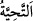
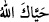

varlıklarından önce “çok merhametlidir.” Bunun için bizzat ve melekler vasıtasıyla
mü’minlerin salâhına olan işlere îtinâ hususunda gereken her şeyi yapmıştır. O halde
ezelde saîd olanın hallerinin değişmesiyle Allâh’ın rahmeti değişmez.
İsyan tozu Hakk’ın rahmetini kirletemez
Deniz seller yüzünden kararmaz.
44. Kendisine kavuştukları gün, Allâh’ın onlara iltifatı, “selâm” dır. Allah onlara
çok değerli mükâfat hazırlamıştır.
Allah Teâlâ dünyâda kulların işlerine îtinâ edip ehemmiyet verdiğini, yâni onları tâate
ve benzeri iyiliklere hidâyet ettiğini beyan edince, âhirette de onlara îtinâ edip
ehemmiyet verdiğini beyan etmiş ve şöyle buyurmuştur: “Kendisine kavuştukları gün,”
ölüm sırasında veya kabirlerden dirilme sırasında veya cennete girdiklerinde Allah
Teâlâ ile buluştukları gün “Allâh’ın onlara iltifatı, “selâm” dır.” Onları yüceltmek
için Allâh’ın selâmının onlara iletilmesidir.
Âhir ömrümüzde senden bir selâm (gelmesi) hoştur,
Tıpkı mektup bitince yazılan “ve’s-selâm” gibi.
“; “ yâni, Allah sana hayat versin denilmek sûretiyle Allâh’ın uzun ömür
vermesi duâsında bulunmaktır. Daha sonra her duâya tahiyye denilmiştir. Çünkü bütün
duâlar hayatın husûlünden yahut dünyâ ya da âhiret hayatına sebep olmaktan hâriç
değildir.
Ya da âyetteki selam, onları cennetle müjdelemek ve hürmet göstermek üzere
meleklerdendir. Tıpkı Allah Teâlâ’nın: “Melekler de her kapıdan onların yanına
varacaklardır. (Melekler:) Sabrettiğinize karşılık size selâm olsun! (derler).”
kavlinde olduğu gibi.
Yahut bu selâm, onların her nahoş durumdan, âfet ve zorluktan selâmette
olduklarının/kurtulduklarının haber verilmesidir.
Enes (r.a.)’dan rivâyet edildiğine göre Hz. Peygamber (s.a.) şöyle buyurmuştur:
“Ölüm meleği, Allâh’ın velî bir kuluna geldiği zaman ona selam verir. Meleğin
selamı şöyledir: “Sana selam olsun ey Allâh’ın velî kulu! Kalk harab ettiğin bu dünyâ
yurdundan mâmûr kıldığın âhiret yurduna çık.” Şâyet bu kul Allâh’ın veli bir kulu
değilse ona şöyle der: “Kalk, mâmûr kıldığın yurdundan harab ettiğin yurduna
çık.”[247]
Fakir (Bursevî) der ki: Dünyânın imarı ziraat, gıdaları çoğaltmak, ırmaklar